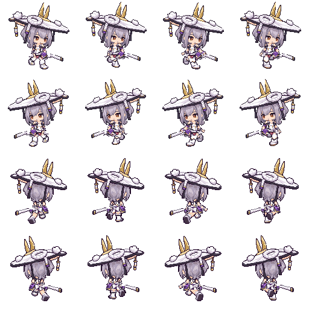

LITTLE GARDEN · CHARACTER STUDY
홍련2 · 걷기 V4 팔 스윙
공통 상체 유지 · 팔 앞뒤 겹침과 팔꿈치 동작상체의 방향을 유지하며 가까운 팔은 몸 앞, 먼 팔은 몸 뒤에서 반대로 흔들어요. 팔꿈치와 손 위치를 함께 확인해 보세요.
1 / 4
수정 전 V3
팔이 몸통 뒤에 가려지고 움직이는 폭도 작았던 V3예요.
서 있는 홍련2 V2
머리부터 허리·칼집까지 이어진 원화로 사용해요.
수정 후 V4
어깨와 팔꿈치를 움직여 손이 앞뒤로 나가요. 상체와 다리 자세는 유지해요.
팔·어깨 움직임 확대
1 → 2 → 3 → 4 · 자세별 확인
네 방향 함께 보기
실제 스프라이트 시트 · 위부터 앞오른쪽 / 앞왼쪽 / 뒤오른쪽 / 뒤왼쪽

움직임 보정 검수본이에요. 승인 정지 그림의 상체와 팔, 기존 걷기의 다리 자세를 사용해요.